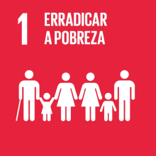

ODS 1: Erradicação da Pobreza
Objetivo 1: Acabar com a pobreza em todas as suas formas, em todos os lugares
A meta é erradicar a pobreza em todas as suas formas e dimensões até 2030. Isso inclui ações concretas para ajudar os mais vulneráveis e garantir direitos iguais a recursos e oportunidades econômicas. Abaixo estão as metas específicas:
- 1.1: Até 2030, erradicar a pobreza extrema para todas as pessoas, atualmente medida como vivendo com menos de US$ 1,90 por dia.
- 1.2: Até 2030, reduzir pela metade a proporção de pessoas que vivem na pobreza, de acordo com as definições nacionais.
- 1.3: Implementar sistemas de proteção social adequados e atingir uma cobertura substancial dos pobres e vulneráveis até 2030.
- 1.4: Garantir que todos, especialmente os pobres e vulneráveis, tenham direitos iguais a recursos econômicos, acesso a serviços básicos e controle sobre propriedades e recursos.
- 1.5: Construir a resiliência dos pobres e vulneráveis e reduzir sua exposição a eventos extremos, choques e desastres até 2030.
- 1.a: Mobilizar recursos significativos de diversas fontes para ajudar países em desenvolvimento a implementar programas de erradicação da pobreza.
- 1.b: Criar marcos políticos sólidos a nível nacional, regional e internacional para apoiar estratégias de desenvolvimento a favor dos pobres.